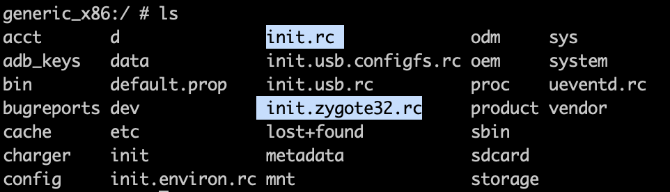

Zygote 是什么
Zygote 中文翻译受精卵，顾名思义是细胞分裂的起点。
在 Android 系统中，通常每个应用程序都运行在单独的进程中，每个进程有自己的 Java 虚拟机，而进程和虚拟机就是由 Zygote 创建孵化出来的。
由下图的 Activity 启动栈可以看出，Zygote 就是 Java 堆栈的起点。

Zygote 的作用
启动 Java 虚拟机；
加载常用类、JNI 函数、主题资源、共享库；
创建应用进程；
启动 SystemServer
创建 Zygote
init 进程
Linux 系统在启动的时候，会创建一个 init 进程，进程会读取 init.rc 配置文件运行一些初始化脚本，类似于在 Windows 下的开始->启动菜单。

这里需要使用 Android 模拟器或者可以 root 的手机获取 root 权限才能看到。
还有一个 init.zygote32.rc 文件（64 位就是 init.zygote64_32.rc），是 zygote 的启动脚本，会被 init.rc 调用。
/init.rc
import /init.usb.rc
import /init.${ro.hardware}.rc
import /vendor/etc/init/hw/init.${ro.hardware}.rc
import /init.usb.configfs.rc
import /init.${ro.zygote}.rc
...
# to start-zygote in device's init.rc to unblock zygote start.
on zygote-start && property:ro.crypto.state=unencrypted
# A/B update verifier that marks a successful boot.
exec_start update_verifier_nonencrypted
start netd
start zygote
start zygote_secondary
...
/init.zygote32.rc
真正启动 zygote 的是一个 /system/bin/app_process 程序。
service zygote /system/bin/app_process -Xzygote /system/bin --zygote --start-system-server
class main
priority -20
user root
group root readproc reserved_disk
socket zygote stream 660 root system
onrestart write /sys/android_power/request_state wake
onrestart write /sys/power/state on
onrestart restart audioserver
onrestart restart cameraserver
onrestart restart media
onrestart restart netd
onrestart restart wificond
writepid /dev/cpuset/foreground/tasksapp_process
app_process的源码在 frameworks/base/cmds/app_process/app_main.cpp。
C++ 应用程序，直接找 main 入口，这里主要做了 3 件事：
- 创建 AndroidRuntime 类；
- 输入参数给 runtime；
- 修改进程名为 zygote
- 启动 runtime 的 start 方法。
int main(int argc, char* const argv[])
{
...
//创建 AppRuntime 类，继承于 AndroidRuntime，重写做一些回调
AppRuntime runtime(argv[0], computeArgBlockSize(argc, argv));
...
//解析输入参数
...
if (!niceName.isEmpty()) {
//进程名设置为zygote
runtime.setArgv0(niceName.string(), true /* setProcName */);
}
if (zygote) {
// 作为 zygote 进程启动的，走这个分支
runtime.start("com.android.internal.os.ZygoteInit", args, zygote);
} else if (className) {
// 非 zygote 模式启动
runtime.start("com.android.internal.os.RuntimeInit", args, zygote);
} else {
...
}AndroidRuntime.cpp
源码： frameworks/base/core/jni/AndroidRuntime.cpp
在 start 方法里主要做了几件事：
- 启动 Java 虚拟机；
- 注册相关 Android Native 函数；
- 启动 Java main 主线程。
/*
* Start the Android runtime. This involves starting the virtual machine
* and calling the "static void main(String[] args)" method in the class
* named by "className".
*
* Passes the main function two arguments, the class name and the specified
* options string.
*/
void AndroidRuntime::start(const char* className, const Vector<String8>& options, bool zygote)
{
...
/* start the virtual machine */
JniInvocation jni_invocation;
jni_invocation.Init(NULL);
JNIEnv* env;
//启动 Java 虚拟机
if (startVm(&mJavaVM, &env, zygote) != 0) {
return;
}
onVmCreated(env);
...
/*
* 注册相关 Android Native 函数
* Register android functions.
*/
if (startReg(env) < 0) {
ALOGE("Unable to register all android natives\n");
return;
}
...
/*
* 反射调用 ZygoteInit/RuntimeInit 的 main 方法，会在虚拟机里创建一个无限循环的主线程
*
* Start VM. This thread becomes the main thread of the VM, and will
* not return until the VM exits.
*/
char* slashClassName = toSlashClassName(className != NULL ? className : "");
jclass startClass = env->FindClass(slashClassName);
if (startClass == NULL) {
ALOGE("JavaVM unable to locate class '%s'\n", slashClassName);
/* keep going */
} else {
jmethodID startMeth = env->GetStaticMethodID(startClass, "main",
"([Ljava/lang/String;)V");
if (startMeth == NULL) {
ALOGE("JavaVM unable to find main() in '%s'\n", className);
/* keep going */
} else {
env->CallStaticVoidMethod(startClass, startMeth, strArray);
}
}
free(slashClassName);
ALOGD("Shutting down VM\n");
if (mJavaVM->DetachCurrentThread() != JNI_OK)
ALOGW("Warning: unable to detach main thread\n");
if (mJavaVM->DestroyJavaVM() != 0)
ALOGW("Warning: VM did not shut down cleanly\n");
}调用完 ZygoteInit 类的 main 函数后，就开始交由 Java 端来构建 Android 的运行环境了。
Zygote 的初始化
ZygoteInit.main
源码： frameworks/base/core/java/com/android/internal/os/ZygoteInit.java
在 ZygoteInit 入口 main 函数，主要工作：
- 预加载资源和类；
- fork创建 SystemServer 进程（第一次启动）；
- 在 zygote 进程开启 socket 监听，等待接收 SystemServer 的远程调用。
/**
* This is the entry point for a Zygote process. It creates the Zygote server, loads resources,
* and handles other tasks related to preparing the process for forking into applications.
* ...
*/
public static void main(String argv[]) {
try{
ZygoteServer zygoteServer = null;
...
Runnable caller;
...
if (!enableLazyPreload) {
//预加载一些资源和类
preload(bootTimingsTraceLog);
}
...
zygoteServer = new ZygoteServer(isPrimaryZygote);
if (startSystemServer) {
// 第一次启动，创建系统 SystemServer 进程
Runnable r = forkSystemServer(abiList, zygoteSocketName, zygoteServer);
// {@code r == null} in the parent (zygote) process, and {@code r != null} in the
// child (system_server) process.
if (r != null) {
r.run();
return;
}
}
Log.i(TAG, "Accepting command socket connections");
// The select loop returns early in the child process after a fork and
// loops forever in the zygote.
// 开启循环监听 Socket 消息
aller = zygoteServer.runSelectLoop(abiList);
} catch (Throwable ex) {
Log.e(TAG, "System zygote died with exception", ex);
throw ex;
} finally {
if (zygoteServer != null) {
zygoteServer.closeServerSocket();
}
}
// We're in the child process and have exited the select loop. Proceed to execute the
// command.
if (caller != null) {
caller.run();
}
}ZygoteInit.forkSystemServer
方法的主要工作：
- 创建 SystemServer 所在的进程 system_server ；
- 一些初始化；
- 初始化 SystemServer 进程。
/**
* Prepare the arguments and forks for the system server process.
*
* @return A {@code Runnable} that provides an entrypoint into system_server code in the child
* process; {@code null} in the parent.
*/
private static Runnable forkSystemServer(String abiList, String socketName,
ZygoteServer zygoteServer) {
...
/* Hardcoded command line to start the system server */
// 设置 system_server 的启动参数
String args[] = {
"--setuid=1000",
"--setgid=1000",
"--setgroups=1001,1002,1003,1004,1005,1006,1007,1008,1009,1010,1018,1021,1023,"
+ "1024,1032,1065,3001,3002,3003,3006,3007,3009,3010,3011",
"--capabilities=" + capabilities + "," + capabilities,
"--nice-name=system_server",
"--runtime-args",
"--target-sdk-version=" + VMRuntime.SDK_VERSION_CUR_DEVELOPMENT,
"com.android.server.SystemServer",
};
ZygoteArguments parsedArgs = null;
int pid;
...
parsedArgs = new ZygoteArguments(args);
...
/* Request to fork the system server process */
//进入 native 方法去 fork 进程
pid = Zygote.forkSystemServer(
parsedArgs.mUid, parsedArgs.mGid,
parsedArgs.mGids,
parsedArgs.mRuntimeFlags,
null,
parsedArgs.mPermittedCapabilities,
parsedArgs.mEffectiveCapabilities);
/* For child process */
//如果是system_server的子进程，pid=0
if (pid == 0) {
if (hasSecondZygote(abiList)) {
waitForSecondaryZygote(socketName);
}
zygoteServer.closeServerSocket();
//3.初始化 SystemServer 进程
return handleSystemServerProcess(parsedArgs);
}
return null;ZygoteInit.handleSystemServerProcess
这里负责 SystemServer 进程剩余的初始化，最后调用 SystemServer 的 main 方法。
SystemServer 中会继续初始化 AMS、PMS 和 WMS 等重要服务。
/**
* Finish remaining work for the newly forked system server process.
*/
private static Runnable handleSystemServerProcess(ZygoteArguments parsedArgs) {
...
if (parsedArgs.mNiceName != null) {
//设置进程名为 system_server
Process.setArgV0(parsedArgs.mNiceName);
}
...
if (systemServerClasspath != null) {
// 找到ClassLoader
cl = createPathClassLoader(systemServerClasspath, parsedArgs.mTargetSdkVersion);
Thread.currentThread().setContextClassLoader(cl);
}
/*
* Pass the remaining arguments to SystemServer.
*/
//在zygoteInit方法内做一些参数初始，
//最后调用RuntimeInit.applicationInit 方法，调起com.android.server.SystemServer的 main 方法。
return ZygoteInit.zygoteInit(parsedArgs.mTargetSdkVersion,
parsedArgs.mDisabledCompatChanges,
parsedArgs.mRemainingArgs, cl);后记
最后以一图概括整个 zygote 启动流程，就很明了了。

SystemServer 内的初始化更复杂，后续继续查看学习。
参考
本博客所有文章除特别声明外，均采用 CC BY-SA 3.0协议 。转载请注明出处！